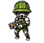
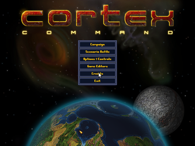
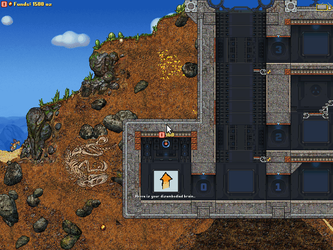

Cortex Command
Dieser Artikel wurde für die folgenden Ubuntu-Versionen getestet:
Ubuntu 16.04 Xenial Xerus
Zum Verständnis dieses Artikels sind folgende Seiten hilfreich:

In dem Action-Spiel Cortex Commands  übernimmt der Spieler die Rolle eines körperlosen Gehirns und kontrolliert aus dem Bunker heraus Klone und Roboter. Das Hauptziel des Spiels ist der Abbau des Rohstoffes Gold, welcher zur Erschaffung weiterer Klone oder dem Kauf von Waffen und Fahrzeugen dient, um mit diesen die Konkurrenz auszuschalten und das Gehirn zu schützen...
übernimmt der Spieler die Rolle eines körperlosen Gehirns und kontrolliert aus dem Bunker heraus Klone und Roboter. Das Hauptziel des Spiels ist der Abbau des Rohstoffes Gold, welcher zur Erschaffung weiterer Klone oder dem Kauf von Waffen und Fahrzeugen dient, um mit diesen die Konkurrenz auszuschalten und das Gehirn zu schützen...
Bis zu vier Spieler können mit- oder gegeneinander antreten. Für die Steuerung wird ein Controller empfohlen.
|  |  |
| Hauptmenü | Spieleszene |
Installation¶
Nachdem man die Datei cortex_command-1.0rc1-linux-i686.bin bzw. cortex_command-1.0rc1-linux-amd64.bin von der in der E-Mail angegebenen Seite heruntergeladen hat, müssen die Ausführrechte [1] gesetzt werden. Anschließend kann das Spiel installiert [2] werden:
./cortex_command-1.0rc1-linux-amd64.bin
Es ist nach erfolgreicher Installation unter "Anwendungen -> Spiele" zu finden.
Bedienung¶
| Hauptmenü | |
| Unterpunkt | Beschreibung |
| "Campaign" | Kampagnen sind noch keine vorhanden. |
| "Scenario Battle" | Spieleszenarien spielen. |
| "Options & Controls" | Grafikeinstellungen verändern und Belegung der Eingabegeräte konfigurieren. |
| "Game editors" | Leveleditoren starten. |
| "Exit" | Spiel beenden. |
Problemlösung¶
Die 64-Bit-Version des Spiels hat einen Fehler. Es empfiehlt sich die 32-Bit-Version zu installieren. Alternativ muss man wie unter CC crashing at startup on Ubuntu 10.10 x64 beschrieben die Dateien umbenennen.
Deinstallation¶
Zur Deinstallation das Skript im Installationsordner aufrufen [2]:
./uninstall-CortexCommand.sh
Tastenkürzel¶
| Cortex Command | |
| Taste(n) | Funktion |
| Strg + R | Zurücksetzen. |
| Strg + P | Leistung anzeigen. |
| Alt + ⏎ | Vollbild- / Fenstermodus. |
| Esc | Spiel beenden. |
Spieler 1¶
| Cortex Command | |
| Taste(n) | Funktion |
 | Bewegen / Zielen |
| H | Feuern |
| J | Halten zum sorgfältigen Zielen. |
| K + A - K + D | Halten und zwischen Geräten wechseln. |
| K + W | Aufnehmen |
| K + S | Ablegen |
| L | Springen |
| Y | Nächsten Roboter/Klon auswählen. |
| U | Vorherigen Roboter/Klon anwählen. |
| Y + U | Gehirn auswählen. |
Spieler 2¶
Die Steuerung erfolgt über den Nummernblock, welcher mit ⇩ num aktiviert wird.
| Cortex Command | |
| Taste(n) | Funktion |
| ↑ + ↓ + ← + → | Bewegen / Zielen |
| 1 | Feuern |
| 2 | Halten zum sorgfältigen Zielen. |
| 3 + ← - 3 + → | Halten und zwischen Geräten wechseln. |
| 3 + ↑ | Aufnehmen |
| 3 + ↓ | Ablegen |
| ⏎ | Springen |
| 4 | Nächsten Roboter/Klon auswählen. |
| 6 | Vorherigen Roboter/Klon anwählen. |
| 4 + 6 | Gehirn auswählen. |

Infobox¶
| Cortex Command | |
| Originaltitel: | Cortex Command |
| Genre: | Action |
| Sprache: | |
| Veröffentlichung: | 2010 |
| Publisher: | Data Realms |
| Systemvoraussetzungen: | Offizielle Systemvoraussetzung |
| Medien: | Download |
| Läuft mit: | nativ |
- Erstellt mit Inyoka
-
 2004 – 2017 ubuntuusers.de • Einige Rechte vorbehalten
2004 – 2017 ubuntuusers.de • Einige Rechte vorbehalten
Lizenz • Kontakt • Datenschutz • Impressum • Serverstatus -
Serverhousing gespendet von